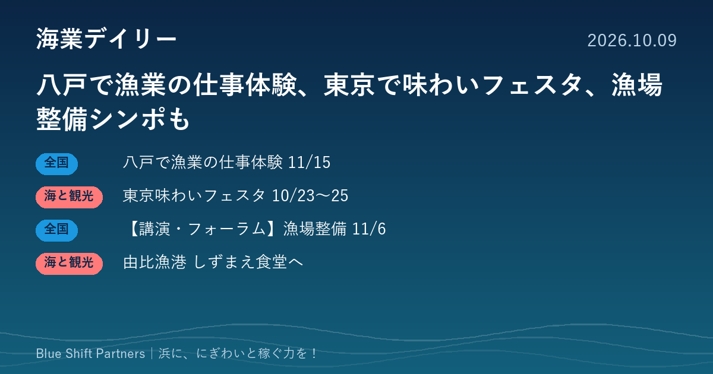

2026.10.09
八戸で漁業の仕事体験、東京で味わいフェスタ、漁場整備シンポも

本日は、漁業の担い手づくりにつながる八戸の体験授業、都心で東京の水産物に触れられる食のイベント、温暖化と漁場整備をテーマにした東京でのシンポジウムなど4件をお届けします。静岡・由比漁港では漁協の食堂が新しい名前で再出発します。
八戸港で「船と漁業を知る授業」、子どもと保護者が漁船見学や仕事体験
一般社団法人全国漁業就業者確保育成センター（漁師.jp）は、11月15日（日）に青森県八戸市で「漁師の仕事！船と漁業を知る授業2026八戸」を開きます。午前は八戸港で実習船や操業中の漁船の船内を見学し、午後は八戸市水産会館でVRによる漁業体験や漁師の仕事を知るセミナーなどを行います。対象は小中学生・水産高校生と保護者で、参加は無料・事前申込制です。八戸市が後援し、県立八戸水産高校が協力しています。
ここがポイント：漁業の人材確保は、子どもや家族が仕事の現場を見る機会づくりから始まります。漁業会社や水産高校、市が組んで開く形は、ほかの浜でも参考になります。
出典：全国漁業就業者確保育成センター（PR TIMES）「漁師の仕事！船と漁業を知る授業2026八戸」（2026-10-08）
東京都が「東京味わいフェスタ2026」を10月23〜25日に開催、豊洲に水産業エリア
東京都などは10月23日（金）から25日（日）まで、丸の内・有楽町・日比谷・豊洲の4会場で「東京味わいフェスタ2026」を開きます。豊洲会場の水産業エリアでは、24日・25日に「ミスターとうきょう漁業」によるワークショップ、25日に東京湾の生き物を見られる移動水族館の展示があります。有楽町会場では、一定額以上の利用者に東京島しょ部の名産品を先着で進呈します。
ここがポイント：都市の消費者に、地元の海と魚を体験と一緒に届ける試みです。首都圏の浜の事業者にとっては、都心の食イベントを販路や認知づくりにどう生かすかを考える材料になります。
出典：東京都（PR TIMES）「東京味わいフェスタ2026 ～TASTE of TOKYO～」出店者・イベント内容決定（2026-10-08）
【講演・フォーラム】日本水産工学会が11月6日に「温暖化と漁場整備」シンポジウム
日本水産工学会は11月6日（金）13時から、東京海洋大学の楽水会館で秋季シンポジウム「温暖化に伴う漁場整備の課題と今後の在り方への提言」を開きます。気候変動下の水産資源、暖海性魚類の分布、藻場の整備や回復、今後の漁場整備の技術などについて、研究機関や道県の関係団体から7名が講演し、総合討論も行います。会員・非会員を問わず参加無料で、定員は約120名、メールでの事前申込制、締切は10月30日（金）です。
ここがポイント：海の環境が変わると、獲れる魚も浜の売りものも変わっていきます。漁協や自治体の方が、藻場や漁場の今後の方向性を専門家から直接聞ける機会です。
出典：日本水産工学会「2026年度 日本水産工学会秋季シンポジウム」会告（2026-09-09）
由比港漁協の食堂が「由比漁港しずまえ食堂」として10月にリニューアル予定
静岡県の公式ページによると、由比港漁協の「浜のかきあげや」は6月28日で閉店し、10月上旬に「由比漁港しずまえ食堂」としてリニューアルする予定と案内されています。新しい食堂の専用サイトも公開され、季節ごとの営業時間が掲載されています。
ここがポイント：漁協直営の食堂は、浜の魚を観光客に届ける海業の代表的な形です。名物を軸にした店をどう衣替えするかは、ほかの漁協直営店にとっても参考になります。
出典：静岡県「食堂ありの直売所」（うおっちんぐ）（2026-07-27）
八戸の体験授業も、東京の食のイベントも、浜の外の人に海の仕事と魚を「体験」してもらう取り組みです。海の環境が変わる中で、獲れる魚の価値をどう伝えるか。浜の稼ぐ力は、知ってもらう場をつくるところから育ちます。